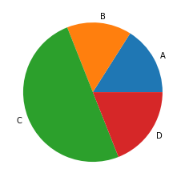

内容
import pandas as pd
import numpy as np
df = pd.DataFrame([[1, 2], [3, 4]], index=["row_1", "row_2"], columns=["col_1", "col_2"])
# rolling across axis=0 works fine:
df.rolling(window=2, axis=0, min_periods=1).aggregate([np.sum, np.mean])
| col_1 | col_2 | |||
|---|---|---|---|---|
| sum | mean | sum | mean | |
| row_1 | 1.0 | 1.0 | 2.0 | 2.0 |
| row_2 | 4.0 | 2.0 | 6.0 | 3.0 |
%load_ext cython
import numpy as np
import matplotlib.pyplot as plt
import pandas as pd
s = pd.Series(np.random.choice(list("ABCD"), size=100, p=[0.1,0.2,0.5,0.2]))
data = s.value_counts().sort_index()
_ = plt.pie(data.values,labels=data.index)

fig, ax = plt.subplots(figsize=(8,6)) #figsize指图片尺寸
ax.plot([1,2,3], [1,2,3])
[<matplotlib.lines.Line2D at 0x157169c76a0>]
%%cython
from cython.parallel import prange
def test():
cdef int i, j, s
for i in prange(5, nogil=True):
j = 0
while j < 10:
j = j + 1
s += j
return s
test()
50